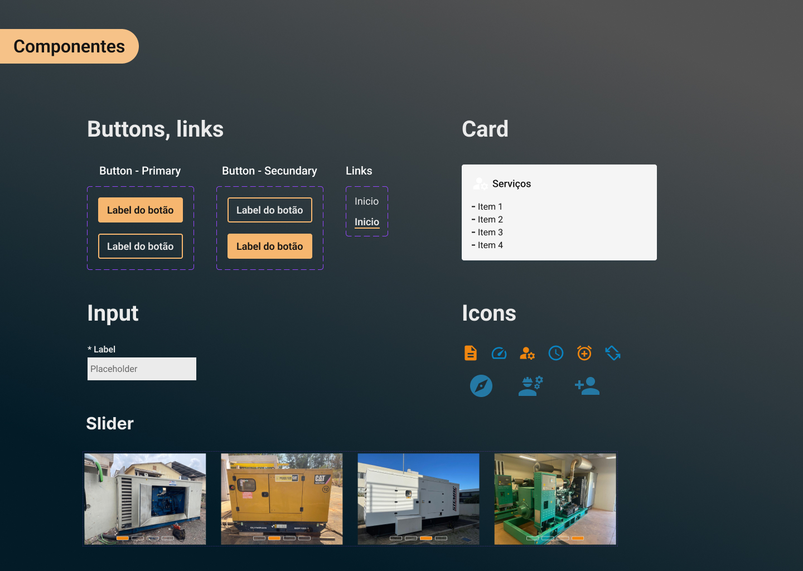
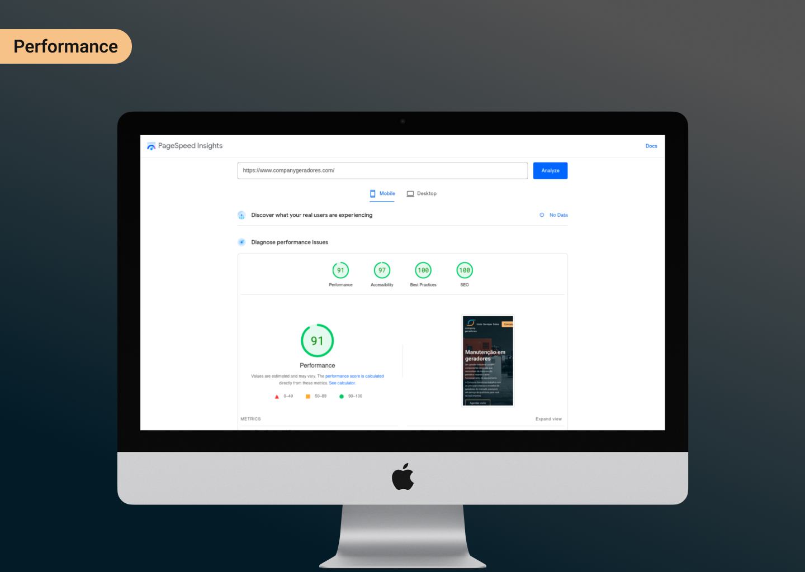
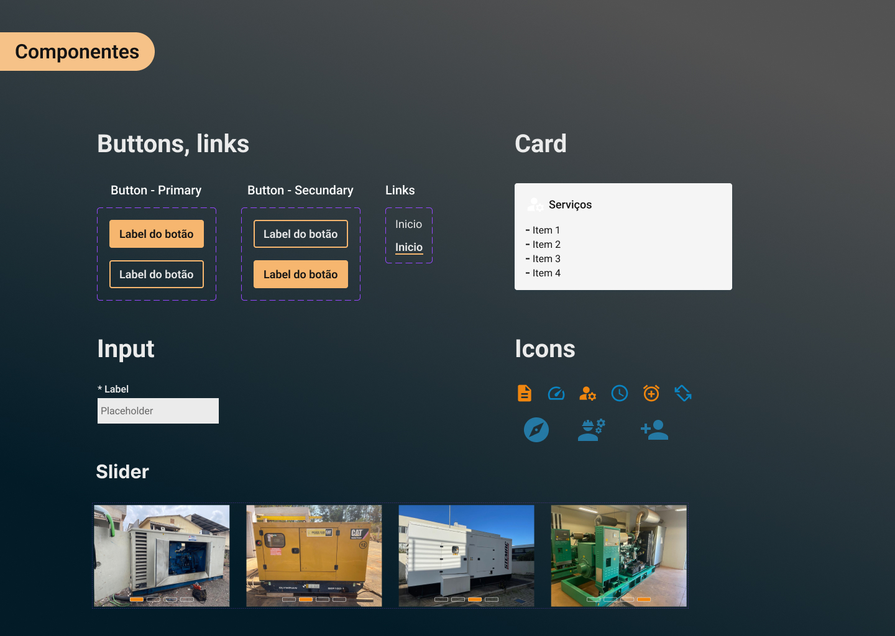
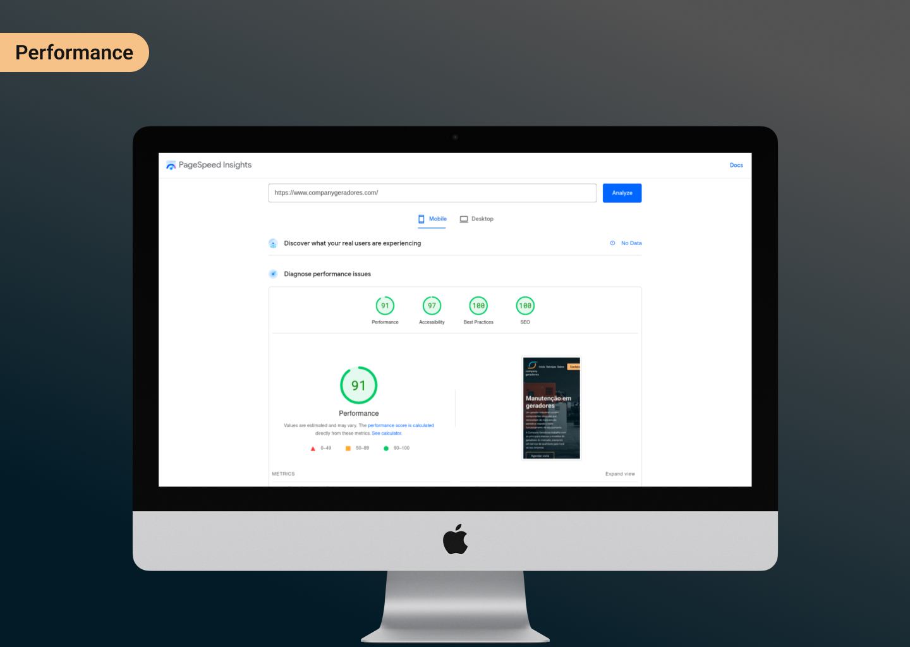

Ser uma referência em soluções energéticas
Objetivo do projeto
Criar a presença digital da Company Geradores através de um site que seja totalmente responsivo, gerando valor para seus usuários.
Kick off
UX Process
O projeto estava definido que seria um site one page, foquei bastante na acessibilidade, constraste de cores e passar informações de forma clara e objetiva fazendo um trabalho forte de UX writing.
Design
Ideação e code
Um layout simples mas que tem muita informação a ser passada, estruturei a maioria em forma de cards e tópicos, o destaque maior para os botões de contato e os tipos de serviços que são oferecidos pela empresa.

Handoff
Ready for code
Desenvolvimento baseado em componentes sempre facilita a entrega rápida e precisa do design.
Uma das exigências do projeto era a utilização das cores azul e laranja que tiveram de ser adaptadas para o uso em telas, como foquei em um design clean não tive problemas na hora do desenvolvimento.
 



Desafios
Dificuldades durante o projeto
A principal meta era trazer mais leads para a empresa e demonstrar quem é a empresa.
o SEO teve de ser muito bem pensado na construção da página utilizando uma semântica adequada ao código e principalmente manter o design coerente com a proposta da marca.